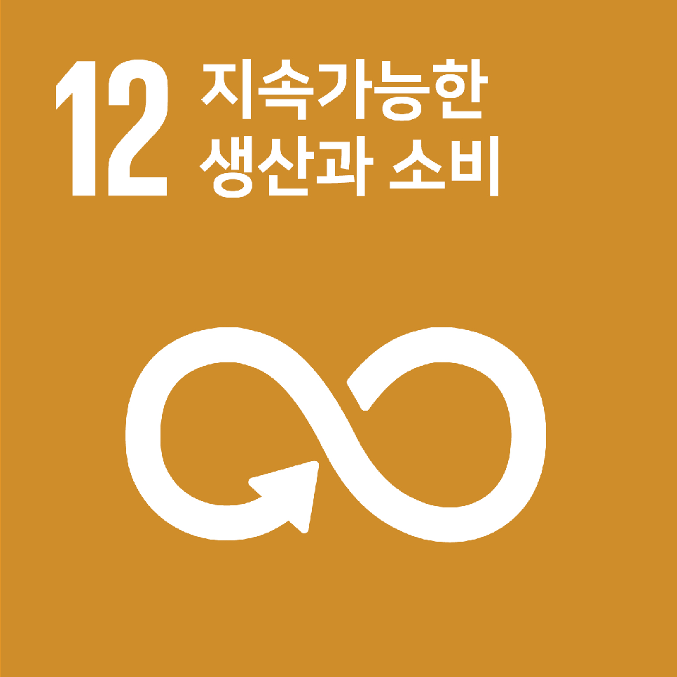
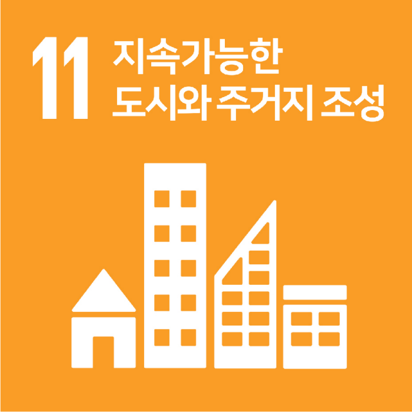

EcoPro의 Hidden Impact
산업군: 기초소재>화학>기타화학
MSCI 기준 SDGs 유사도 TOP 3
1st

7.5 / 10
2nd

6.5 / 10
3rd

5.5 / 10
TOP 3 선정 이유
- 1st (SDG 9): 배터리 양극재·수처리·오염저감 솔루션 등은 산업 인프라의 효율·친환경 전환에 직접 기여(SDG9). 인니 제련소 인수와 전구체~양극재 통합, 2.8만톤 오프테이크·글로벌 JV로 공급망·생산 역량을 정량 강화. 다만 제품 정량지표 공개는 제한적.
- 2nd (SDG 12): 제품: 이차전지 소재 리사이클링과 순환원료 대체로 자원순환에 기여하나 정량 성과 공개는 제한적. 운영: 인니 제련-전구체-양극재 일체화로 자원·에너지 효율 제고, 약 2.8만톤 오프테이크와 JV·공동개발로 책임있는 공급망을 강화.
- 3rd (SDG 11): EV/ESS 양극재, 배출·미세먼지 저감 장비, 수처리 솔루션으로 도시 대기질·수자원 관리 및 에너지 회복력에 직접 기여하나 정량 감축 수치 공개는 제한적입니다. 운영은 제련-전구체-양극재 통합과 책임있는 공급망·JV로 안정적 보급과 인프라 회복력 지원이나 도시단위 운영성과 근거가 부족합니다.
6.0/10
소셜 임팩트 최종 점수
평가 근거:
핵심 사업이 EV/ESS용 양극재, 리사이클링, 수처리·오염저감 솔루션으로 산업 인프라 효율·친환경 전환(SDG9·12·7·13·11)에 직접 기여. 인니 제련-전구체-양극재 통합과 약 2.8만톤 오프테이크, 글로벌 JV로 책임있는 공급망·생산역량을 강화. 다만 제품·운영의 정량 성과(감축량·처리량·매출비중 등) 공개가 전반적으로 제한적이고, 생물다양성·자체 배출 감축·도시단위 성과 근거가 부족. 상장 심사 관련 내부통제 이슈도 존재. 임팩트 지향성은 명확하나 ‘성과 뚜렷’ 미충족으로 보수적 6점.